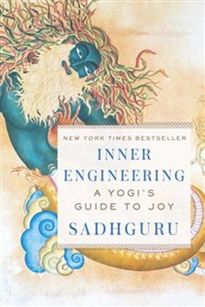

Library › Self-Improvement
Inner Engineering — Summary & Key Lessons

Yogic science for taking charge of your inner world — joy as default, not a goal.
📖 OPEN THE FULL INTERACTIVE BREAKDOWN →🌐 Read it in Hindi, Hinglish, Gujarati, Tamil & 22 more languages — free, with audio.
💡 The Big Idea
Sadhguru's Inner Engineering flips self-help's core question. Most systems ask: 'How do I become better?' He asks: 'Who is the one experiencing your life?' Joy is not something you chase or achieve — it is your default nature when you take charge of the inner world. The body, mind, emotions and energy are four 'vehicles' you can learn to drive consciously. Once you master your inner chemistry, outer circumstances stop deciding your experience. The book is a practical toolkit — from breath to intention — for reclaiming the seat of the driver instead of living as a passenger of your own thoughts.
🧠 The 6 Key Lessons
Lesson 1: Joy Is Your Default Nature, Not a Goal
Part 1: When You Become the Boss of Your Inner World
A cucumber plant does not strive to be a good cucumber — it simply grows. Sadhguru argues that human misery comes from trying to become something we are not, instead of being what we already are. Joy, peace and love are not achievements to chase; they are the natural state of a mind that is not fighting itself. The moment you stop treating happiness as a destination and start treating it as your baseline, the chase that exhausted you disappears. Suffering is not given to you — it is something you produce internally, which means you also have the power to stop producing it.
📖 Example: Sadhguru tells of his own motorcycle accident at 25 that left him in a body he could barely control — yet in the hospital, he realized the one thing no one could take from him: his inner experience. He decided to be joyful regardless of the body's state, and… Read the full example →
⚡ Do this: For one week, when you feel low, pause and ask: 'Who is generating this feeling — the event, or me?' Then consciously choose your response for 60 seconds.
Lesson 2: You Are Not Your Thoughts
Part 1: The Machinery of the Mind
The mind is a machine that produces thoughts the way a digestive system produces juices — it does not stop. Most people identify with every thought that passes through, believing 'I am my anger' or 'I am my anxiety'. Sadhguru says thoughts and emotions are data, not identity. When you create a little distance between the thinker and the thought, you gain the ability to observe without being hijacked. That distance is the beginning of inner freedom. You can use the mind as a tool instead of being used by it — the difference between riding a horse and being dragged by it.
📖 Example: He compares the mind to a software programme installed without your permission. When you notice a negative thought loop repeating, it is not 'you' thinking — it is the programme running. Simply watching the loop without engaging is the first step to… Read the full example →
⚡ Do this: Sit for 3 minutes and label every thought as 'thought' silently as it appears. Notice the gap between thoughts — that gap is you.
Lesson 3: The Body Is Food — Treat It With Respect
Part 2: The Body
Sadhguru's radical claim: the body is just a piece of food you ate — a highly sophisticated one. Whatever you eat becomes this body, so the quality of your life is directly linked to what you feed it. He advocates eating consciously: food that is fresh, close to the earth, and eaten in moderation. The body also needs movement, rest and awareness of its signals. Most people misuse the body for decades — feeding it garbage, running it on fumes, ignoring pain — then complain when it 'fails' them. Treating the body as a temple rather than a garbage bin is not spirituality; it is basic engineering.
📖 Example: He describes how after his accident he rebuilt his body deliberately — yoga, diet, rest — and it became stronger than before. The body you have is the only one you get; he treats it like a precious instrument that needs daily tuning. Read the full example →
⚡ Do this: Today, eat one meal slowly, without screens, noticing every bite. Ask: 'Am I fuelling this body or punishing it?'
Lesson 4: Emotions: You Can Create the Ones You Want
Part 2: The Mind and Emotions
People believe emotions happen to them — love strikes, anger erupts. Sadhguru says emotions are something you can create, like a musician creates music. With practice, you can generate the emotional climate you choose instead of reacting to circumstances. The most powerful emotional state to cultivate is love — not as a relationship transaction, but as a quality you radiate regardless of who is in front of you. When love becomes your default emotional state, people, situations and even difficult days lose their power to destabilize you. You are the composer of your inner weather.
📖 Example: He offers the simplest definition of love: if you can be joyful and pleasant within yourself, that pleasantness naturally radiates to everyone around you. A pleasant inner state is the greatest gift you can give others — not your opinions or advice. Read the full example →
⚡ Do this: Choose one person today (even someone difficult) and silently wish them well for 30 seconds. Notice how your own mood shifts.
Lesson 5: Energy: The Fourth Dimension of Wellbeing
Part 3: Energy
Beyond body, mind and emotion, Sadhguru introduces a fourth dimension — prana, or life energy. This is the most fundamental of the four because it powers the other three. When your energy is low, everything feels heavy; when it is vibrant, problems shrink. Simple practices can raise your energy: conscious breathing, keeping the spine erect, spending time in nature, and cultivating inner stillness. The breath is the bridge — by regulating it, you directly regulate your energy system. This is not esoteric theory; it is the science of feeling alive versus merely surviving.
📖 Example: He points to how a few deep breaths change your state in seconds — proof that energy responds to conscious input. Yogis have mapped this for thousands of years; modern athletes and performers are rediscovering it through breathwork. Read the full example →
⚡ Do this: Do 10 slow, deep breaths right now, focusing on the exhale being longer than the inhale. Repeat before any stressful task today.
Lesson 6: Inner Engineering: The Technology of Wellbeing
Part 4: The Technology of Wellbeing
The final lesson integrates everything: wellbeing is not about acquiring more — it is about fine-tuning the four instruments you already have. Sadhguru offers a simple daily formula: a few minutes of inner work (meditation/breath), conscious eating, awareness of thought patterns, and an attitude of acceptance toward what you cannot change. This 'inner engineering' is like maintaining a car — regular, small, deliberate. The reward is not dramatic enlightenment but something more practical: the ability to stay joyful when life gets messy, which is the real definition of success.
📖 Example: He suggests that if you cannot find time for 20 minutes of inner practice daily, you need 40 minutes — because your life is running on so much friction that even efficiency is impossible. Inner work reduces the friction, making everything else faster and… Read the full example →
⚡ Do this: Commit to a 10-minute daily inner practice (breath + stillness) for the next 7 days. Mark each day on a calendar — the chain is the motivation.
✅ 5-Step Action Plan
- Run the 'who is generating this?' check every time a negative emotion appears — 60 seconds of conscious response.
- Eat one slow, screen-free meal daily; treat food as fuel, not entertainment.
- Do 10 deep breaths (longer exhale) before every stressful task for 7 days.
- Create one 10-minute daily inner practice slot — calendar it like a meeting.
- Radiate one silent act of goodwill toward a difficult person every day for a week.
💬 Best Quotes from Inner Engineering
- “If you are not joyful, you are not smart enough.”
- “The quality of your life is essentially the quality of your inner space.”
- “What you call 'peace' is the absence of inner noise. Create it, don't seek it.”
Interactive version: mark lessons as read, listen in your language, share quote cards.